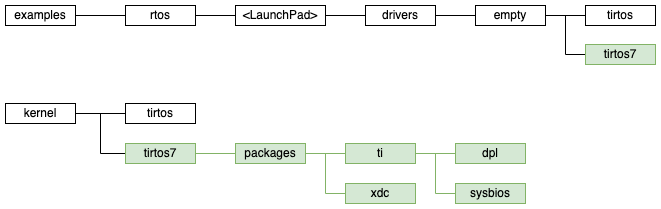
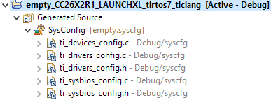
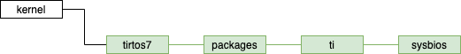

TI-RTOS to TI-RTOS7 Migration¶
The purpose of this is to be a customer porting guide from TI-RTOS (tirtos) to TI-RTOS7 (tirtos7).
Note
TI-RTOS7 is compiled in flash and does not use components in ROM.
SDK folder structure¶
TI-RTOS and TI-RTOS7 currently coexist in the SimpleLink SDK. They thus need separate folders for source and examples. The relative paths to header and source files are the same between tirtos and tirtos7.
.cfg vs .syscfg¶
Overview¶
The kernel on TI-RTOS was configured by specifying a configuration in a .cfg file and XDC Tools to actually construct and build the kernel. When importing a TI-RTOS project, the dependent kernel project is also imported.
TI-RTOS7 instead leverages SysConfig to generate ti_sysbios_config.c/h based on the project’s .syscfg file. This also means that the .cfg file, XDC Tools, and the dependent kernel project are no longer needed.
The module and field names have been chosen to make the transition as easy as possible. You will need to take your existing .cfg file and translate it into content to add to your .syscfg.
How to include common tirtos7 .syscfg file¶
Note
TI-RTOS7 only works with SysConfig 1.10 and above. Earlier versions of SysConfig are not compatible.
Depending on how often your projects share their kernel configurations and how complex they are, it can be advantageous to store a default .syscfg configuration in a dedicated file that is loaded by the actual project’s .sysconfig file.
To facilitate this, SysConfig 1.10 added the –rtos command line parameter. This behaves just like the –board option that exists today and allows you to execute additional scripting.
// @cliArgs --rtos tirtos7
if (system.getRTOS() === "tirtos7") {
const tirtos7_release_syscfg_js = system.getScript("tirtos7_release.syscfg.js");
}
The Core SDK is shipping a reasonable common configuration in kernel/tirtos7/builds/ that can be loaded via the code above.
What SysConfig options do you have?¶
A complete listing of kernel configuration options is generated as html and can be found here: TI-RTOS7 Kernel (SYS/BIOS) SysConfig Reference .
To locate the SysConfig modules for more information on configurations and details on each configuration, navigate to the following location in Core SDK:
Golden .syscfg¶
Here is a excerpt of the old “golden” .cfg configuration and the equivalent in .syscfg. These are what the Core SDK examples are based on.
The golden .syscfg is expected to change over time as we remove POSIX from the default configuration and examples, and expose additional options that let us reduce the footprint of the default configuration. The current version has a number of features that are not necessarily useful to all users.
1/* ================ Clock configuration ================ */
2var Clock = xdc.useModule('ti.sysbios.knl.Clock');
3Clock.tickPeriod = 10;
4
5/* ================ Hwi configuration ================ */
6var halHwi = xdc.useModule('ti.sysbios.hal.Hwi');
7var m3Hwi = xdc.useModule('ti.sysbios.family.arm.m3.Hwi');
8
9//halHwi.checkStackFlag = true;
10halHwi.checkStackFlag = false;
11
12//m3Hwi.enableException = true;
13m3Hwi.enableException = false;
14//m3Hwi.excHandlerFunc = null;
15
16m3Hwi.nvicCCR.DIV_0_TRP = 0;
17//m3Hwi.nvicCCR.DIV_0_TRP = 1;
18
19/* ================ Idle configuration ================ */
20var Idle = xdc.useModule('ti.sysbios.knl.Idle');
21
22//Idle.addFunc("&myIdleFunc");
23Idle.addFunc('&Power_idleFunc'); /* add the Power module's idle function */
1/* ================ Kernel (SYS/BIOS) configuration ================ */
2const BIOS = scripting.addModule("/ti/sysbios/BIOS");
3
4/* ================ Clock configuration ================ */
5const Clock = scripting.addModule("/ti/sysbios/knl/Clock", {}, false);
6Clock.tickPeriod = 10;
7
8
9/* ================ Hwi configuration ================ */
10const Hwi = scripting.addModule("/ti/sysbios/family/arm/m3/Hwi", {}, false);
11
12//Hwi.checkStackFlag = true;
13Hwi.checkStackFlag = false;
14
15//Hwi.enableException = true;
16Hwi.enableException = false;
17//m3Hwi.excHandlerFunc = null;
18
19//Hwi.nvicCCR.DIV_0_TRP = 0;
20//Hwi.nvicCCR.DIV_0_TRP = 1;
21
22const powerIdle = Idle.addInstance();
23powerIdle.$name = "powerIdle";
24powerIdle.idleFxn = "Power_idleFunc";
The following are differences observed between the .cfg configuration and .syscfg configuration that may not be a direct migration:
.cfg Module |
Difference between TI-RTOS and TI-RTOS7 |
|---|---|
Boot |
Boot.syscfg exists in tirtos7, but .syscfg doesn’t need to add the Boot module unless non-default settings are used. |
Debugging¶
Error |
Description |
Resolution |
|---|---|---|
When attempting to open the SysConfig file in CCS, SysConfig will throw an error stating “/ti/boards/LP_CCXXXXXX: Device not found : CCXXXXXXGZ” |
Example image of error: This will occur if the SysConfig product version of the project does not match the expected SysConfig version. |
Navigate to the the following settings:
Right click project → Properties → General → Products
Verify the SysConfig version matches the SysConfig version CoreSDK is using.
|